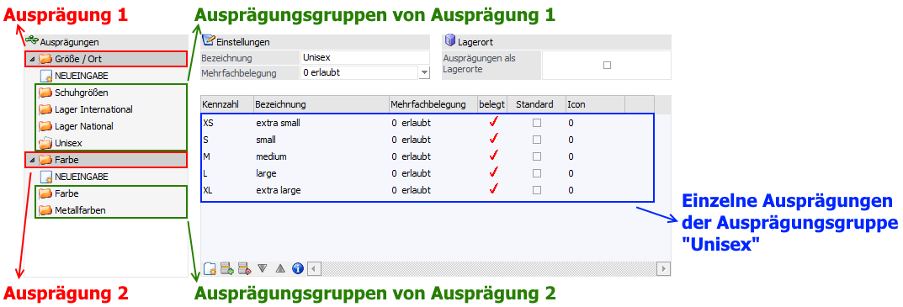
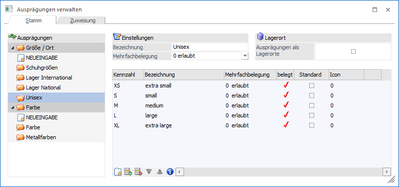

Im Menüpunkt…
1 WinLine FAKT
1 Stammdaten
1 Ausprägungen
1 Ausprägungen verwalten
… werden die Ausprägungen (nachdem diese im Menüpunkt Ausprägungen initialisieren definiert worden sind) in allen Einzelheiten angelegt. Hierbei sind die einzelnen Ausprägungen immer einer Ausprägungsgruppe zugeordnet, welche wiederum der Ausprägung 1 oder Ausprägung 2 zugehörig ist.
Beispiel

Hinweis
Bei der späteren Anlage eines Artikels kann diesem jeweils eine Ausprägungsgruppe aus dem Bereich Ausprägung 1 und Ausprägung 2 zugeordnet werden.

Das Fenster unterteilt sich hierbei in die folgenden Register, welche in den nachfolgenden Kapiteln beschrieben werden:
ü Register "Stamm"
In dem Register
"Stamm" werden die Ausprägungsgruppen, sowie die einzelnen Ausprägungen,
definiert.
ü Register "Zuweisung"
In dem
Register "Zuweisung können Ausprägungen einer anderen Ausprägungsgruppe
zugewiesen werden
Buttons
Ø Ok
Die Anwahl des Buttons "Ok" bzw. die Taste F5 hat abhängig vom aktivieren Register unterschiedliche Auswirkungen:
ü Register "Stamm"
Es werden die
Ausprägungsgruppen und die Ausprägungen gespeichert.
ü Register "Zuweisung"
Es werden
die aktivieren Ausprägungen der Ausprägungsgruppe zugewiesen.
Ø Ende
Durch Drücken des Buttons "Ende" bzw. der Taste ESC wird der Programmbereich geschlossen und alle nicht gespeicherten Eingaben verworfen.
Ø Ausprägungsgruppen löschen
Durch Anwahl des Buttons "Ausprägungsgruppen löschen" wird die aktuelle Ausprägungsgruppe gelöscht.
Hinweis
Dieses ist nur möglich, wenn sich in der Gruppe keine einzelnen Ausprägungen mehr befinden.